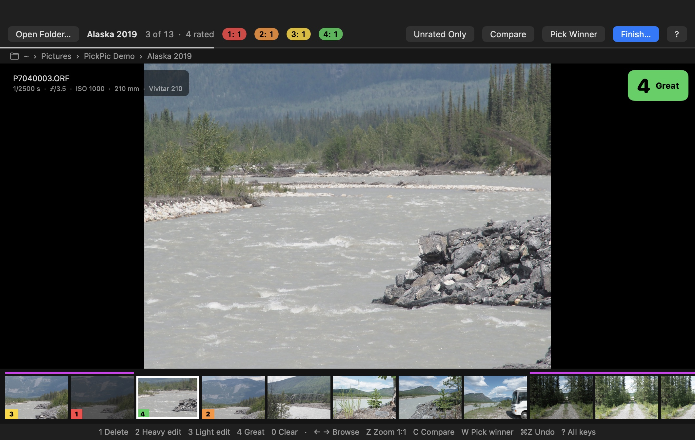
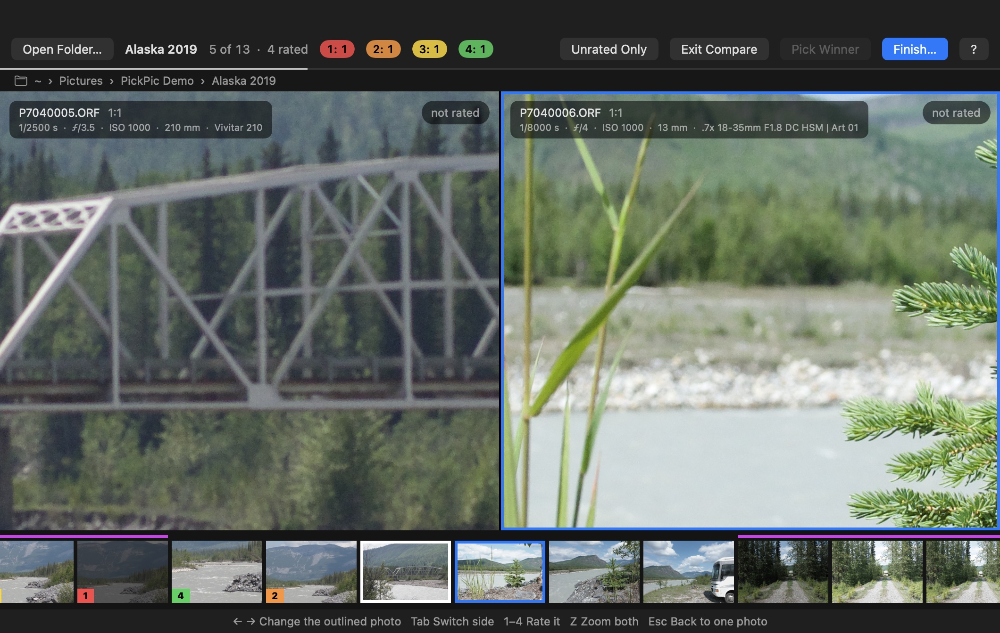
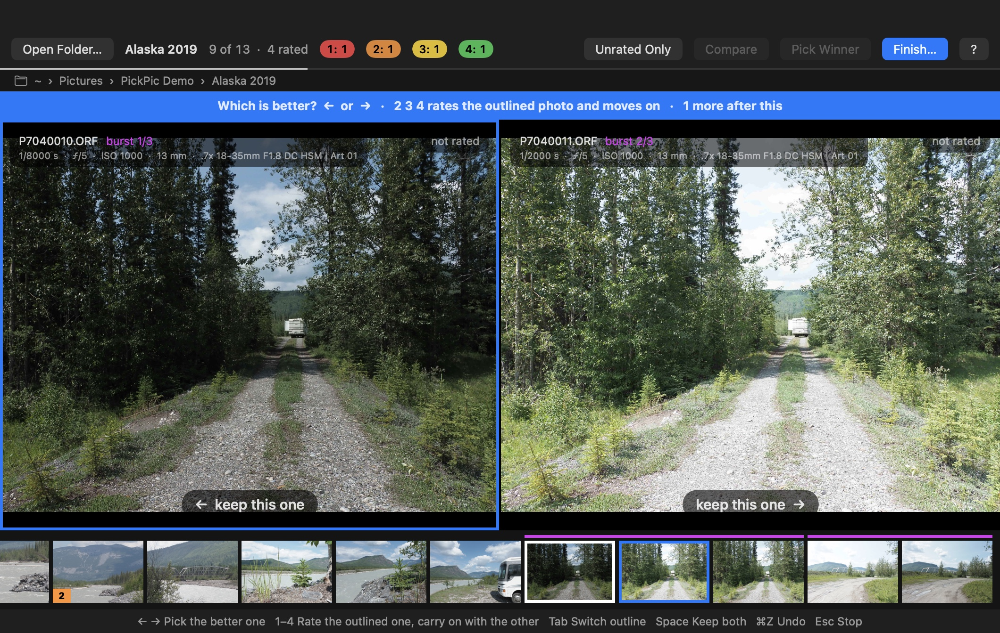

Quickstart guide: fast photo culling for Mac
PickPic does one job: it helps you get through a folder of photos quickly and decide what is worth keeping. Open a folder, arrow through it, and press one key per photo. It never edits a photo, and there is no library to import into.

This beta is not notarized by Apple, so macOS blocks it the first time. Double-click PickPic, dismiss the warning, then go to System Settings > Privacy & Security, scroll down and click Open Anyway. You only do this once.
Each rating is written to the file as a standard Finder tag, so you can sort, search and filter by it in Finder or any app that reads tags. PickPic keeps no database of its own. Quit whenever you like; reopening the folder picks up at the first unrated photo.
| Key | Rating | Meaning | Finder tag |
|---|---|---|---|
| 1 | 1 Delete | A dud. Marked for the Trash. | 1 Delete (red) |
| 2 | 2 Heavy edit | Something interesting, but it would take real work. | 2 Heavy edit (orange) |
| 3 | 3 Light edit | Worth a little editing. | 3 Light edit (yellow) |
| 4 | 4 Great | A great shot. | 4 Great (green) |
| 0 | Clear | Removes the rating. | Tag removed |
If the tags show up gray in Finder: Finder sometimes ignores the color an app sets. Fix it once: in a Finder window's sidebar (or Finder > Settings > Tags), right-click each of the four tags and pick its color. It then applies to every photo, past and future.
| Z | 1:1 zoom. One photo pixel on one screen pixel, with no smoothing. Drag to move around, or double-click a spot to zoom straight to it. RAW files show their built-in preview first for speed; the full RAW is decoded when you zoom. |
| I | Shot details. Shutter speed, aperture, ISO, focal length and lens under the file name. |
| F | Unrated only. Hides everything you have already rated, so a half-finished folder shrinks to what is left. |
| H | Hide the bars. The photo fills the window. Press again to bring them back. |
Press C. The photo you are on stays on the left and the next one appears on the right. One side has a blue outline; that is the side your keys act on.

PickPic treats photos shot within a few seconds of each other as a burst and joins them with a purple bar in the filmstrip. On any photo in a burst, press W. You get two photos and one question: which is better?
Nothing is deleted during this. Photos rated 1 only go to the Trash when you choose Finish. Outside a burst, W compares onward from the current photo until you press Esc. The burst window is 3 seconds by default and can be changed in Settings.

Press ⌘↩ or click Finish. You choose what happens with a few checkboxes, and PickPic remembers your choices:
Anything you don't move stays where it is and keeps its tag. Finish can't be undone with ⌘Z, but trashed photos can be put back from the Trash.
| Everyday | |
|---|---|
| ← → | Previous / next photo |
| 1 2 3 4 | Rate |
| 0 | Clear the rating |
| U | Jump to the next unrated photo |
| ⌘Z | Undo |
| Delete | Move this photo to the Trash now |
| ⌘↩ | Finish |
| ⌘O | Open a folder |
| Views and modes | |
|---|---|
| Z | 1:1 zoom |
| C | Compare side by side |
| W | Pick a winner |
| Tab | Switch sides (compare, pick a winner) |
| F | Unrated only |
| I | Shot details |
| H | Hide the bars |
| ? | Show the key list in the app |
Bug reports and feature requests are exactly what this beta is for. Please reply in the thread where you found PickPic. A useful report includes:
The most helpful things to test: does your camera's RAW format open, do bursts group the way you expect, and does Finish put the right photos in the right place?